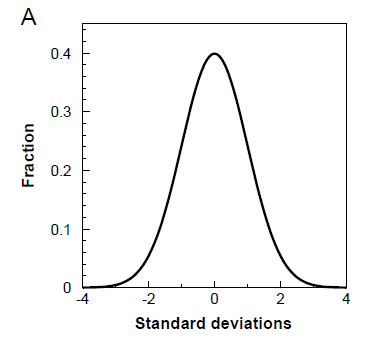
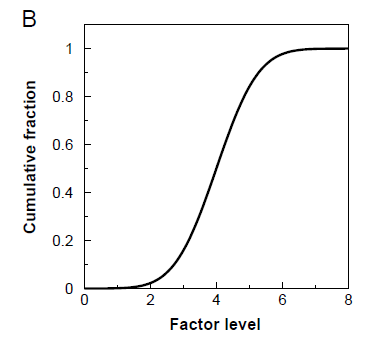
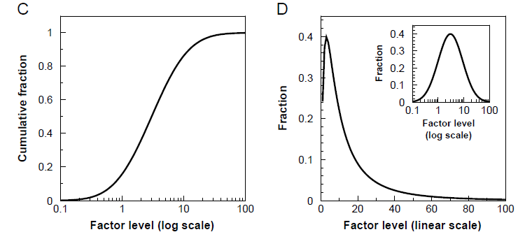
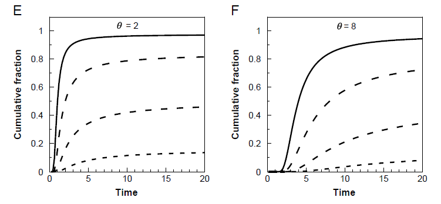
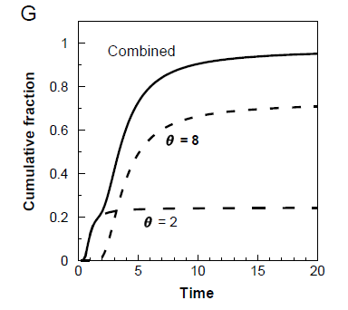

Introduction
The population-based threshold (PBT) model has been described in detail in Bradford and Bello (2022) and Bradford (2026). Ways to fit data to the model have also been published (Bradford, 1990; Bello and Bradford, 2016; Onofri et al., 2018) and an RShiny app is available for use that will both fit the model and prepare graphs of the results (https://connect.doit.wisc.edu/pbtm/). However, it is also useful to have a graphics program to plot data and illustrate the predictions of the PBT model, and many such programs are available. The one that I used for many years was the CoPlot program produced by CoHort. Unfortunately, that company closed a number of years ago, but fortunately, due to demand from prior users, they have now provided free access to the program itself (as well as its companion programs CoStat and CoText). This short tutorial will describe how to use CoPlot to plot data using the PBT model.
CoPlot access
The CoPlot program can be downloaded from https://cohortsoftware.com/coplot.html. Follow the instructions there to download the required files and install the program on your own computer. Running the file “coplot” [Windows batch file] will open the program. There are tutorials available from the same site for utilizing the various features of the program. I will focus here only on how to create functions that will plot predictions from the PBT model based on its three main variables.
Plotting the PBT model
The core of the PBT model is a normal distribution of sensitivities of
individuals in a population to various factors that can affect the
individuals’ behaviors. To plot a normal distribution, create a
Graph and then create a Function and enter
norm((x-μ)/σ), where “norm” indicates
a normal distribution function, “x” represents the values of
the x-axis that the program will insert, “μ” is
the mean value for the distribution, and “σ”
is the standard deviation of the distribution. Using values of 0 for
μ and 1 for σ, this will produce the plot
A below. The median of the distribution is 0 and the
spread is about 6 σ.

To plot the cumulative version of this distribution, create a Function
cumNorm((x-4)/1), where μ has been given the
value of 4 and σ has been given the value of 1. This will
result in graph B below, which is the cumulative
version of the distribution in graph A based on
increasing amounts of a promotive regulatory or interactive factor. This
type of distribution is generally associated with a dose-response curve,
for example.

It is often the case that the dose-response curve is normally
distributed on a logarithmic dosage scale rather than a linear one, as
shown in the standard cumulative form in the graph
C below. This cumulative distribution is based on a
normal distribution on a logarithmic scale (inset, graph
D below). However, plotting the distribution curve on a
linear scale illustrates the change in shape, with a sharp rise and slow
(i.e., exponential) decline across the same range of factor levels
(graph D below). These graphs can be plotted using the
same “norm” and “cumNorm” functions as above,
but by inserting “log(x)”, “log(μ)”
and “log(σ)” where these terms appear (i.e.,
norm((log(x)-log(3))/log(3)) or
cumNorm((log(x)-log(3))/log(3)) for the graphs shown). The
x-axis can be changed from linear to logarithmic by selecting “X
axis” on the Graph menu and changing the scale from “Linear
Scale” to “Log Base 10”.

These basic formulas can be used to plot the normal and cumulative distributions using the values of μ and σ for the population of interest.
Plotting PBT time courses based upon threshold distribution and time constant
The cumulative equation can be modified to include the time constant
(θ) in the PBT model, which is defined as
θ = (X–Xb(i))ti, where X is the factor level, Xb(i) represents the distribution of sensitivities of
individuals (i) to X, and ti is
the time for individual i to respond to that factor level. This
then predicts the time course of responses to a given factor level based
upon the sensitivity distribution and the time constant. In CoPlot, this
can be entered as a function:
cumNorm(((X-θ/x)-μ)/σ). This function will
plot the time courses of responses of the population defined by
μ and σ and the value of the time constant
θ. For example, using the same values as in graph
B for μ and σ (4 and 1) and
values of 6 for X and 2 for θ, the solid curve
in graph E below will be plotted. Using the same values
for θ, μ and σ but decreasing
the factor levels by steps of 1 (i.e., to 5, 4 and 3), the resulting
curves are shown with decreasing dash sizes as the level of the
promotive factor decreases (graph E). This illustrates
the two key features of the PBT model, which are that as the factor
level increases for a promoter (i.e., from 3 to 6 in this example), the
number of individuals recruited to respond increases and their response
times are shortened. If the factor is an inhibitor rather than a
promoter, the Function can be modified to
cumNorm(((X+θ/x)-μ)/σ) and the curves will
be lower as the factor level increases. Changing the time constant
(increasing here from 2 to 8) delays responses across all factor levels,
as shown in graph F below.

Subpopulations
In the examples above, the total population is set to 1, and the
distributions and time courses indicate the fractions of this total
population on the y axis. However, multiple subpopulations can be
present within a total population. This is often the case for seeds, for
example, where seeds from different productions might be blended
together into a single lot. The presence of such subpopulations can be
accounted for by multiplying the functions above by the appropriate
scaling factor. For example, seed populations are generally referred to
as percentages of the total number of seeds, with a maximum of 100%. In
that case, multiplying the equations in graphs E or
F by 100 would change the y-scale to 0 to 100, and the
curves might then represent the percentage of seeds having germinated by
each time point. With mixtures, each subpopulation can be defined by its
own values of θ, μ and σ, and
then each Function is multiplied by the fraction of the total that is
represented by each subpopulation. Thus, if the two populations
represented in graphs E and F were
blended in the amounts of 25 and 75% of the total, multiplying the
function in E by 0.25 and the function in
F by 0.75 would give the curves shown in graph
G below. Adding those two functions in a single
function, i.e.,
0.25*cumNorm(((6-2/x)-4)/1)+0.75*cumNorm(((6-8/x)-4)/1),
gives the time course of the total population at the highest factor
level (6). The values of each parameter in each subpopulation as well as
their fractions in the total population can be varied, resulting in a
wide range of possible combined time courses even at a single factor
level.
